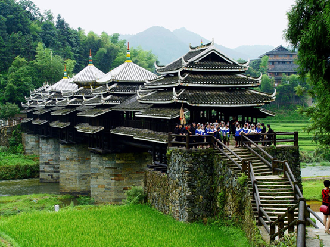

侗族文化（三江）生态保护区
作者： 来源： 发布时间：2016-07-26

侗族文化（三江）生态保护区以三江县境内的古宜镇、林溪乡、八江乡、独峒乡、同乐乡、良口乡、洋溪乡、富禄乡、梅林乡、老堡乡等行政区域为重点保护范围，并辐射到周边地区。对区域内集中分布、特色鲜明、形式和内涵保持完整的侗族传统文化及其他非物质文化遗产代表性项目的文化生态实行区域性整体保护。其设立于2012年。 侗族文化（三江）生态保护区的保护重点在于侗族干栏建筑文化；侗族制度文化；侗族民歌文化；侗族戏曲文化；侗族歌舞文化；侗族服饰文化；侗族饮食文化，以及侗族医药、侗族器乐、侗族农民画、打油茶等非物质文化遗产代表性项目、代表性传承人，和其他非物质文化遗产组成部分的实物和场所、文物古迹，以及保护区范围内非物质文化遗产所依存的自然生态环境和人文生态环境。 目前，保护区重点保护区域内共有不可移动文物点471处，其中，侗族文化（三江）生态保护区内的三江侗族村寨被列入世界文化遗产预备名单；程阳永济桥、岜团桥、马胖鼓楼、和里三王宫被列为国家级重点文物保护单位。另外，已普查和收集的非物质文化遗产资源共670多条目，“侗族木构建筑营造技艺”、“侗族大歌”、“侗戏”等3项被列入国家级非物质文化遗产名录。侗族花炮节、侗族刺绣、侗族百家宴、侗族器乐、侗族医药、侗笛艺术等10项被列入自治区级非物质文化遗产保护名录。在文化区整体性保护工作上取得一定成效。